Ведущая праздников · 15 лет на сцене
Ирина
Волгина.
Праздники, в которых
есть душа, стиль и смысл.
Создаю атмосферу, где каждый чувствует себя важным, а праздник запоминается надолго.
Обсудить ваш праздник Листайте вниз Искренне. Легко. По-настоящему.
Искренне. Легко. По-настоящему. Ирина
ИринаДавайте
познакомимся
Привет! Я — Ирина. И я верю, что лучшая программа праздника — это истории самих людей.
На моих вечерах родители плачут от счастья, друзья смеются до слёз, а незнакомые между собой люди к концу вечера становятся одной большой семьёй.
Актёрское образование, внимание к деталям и любовь к своему делу помогают мне создавать события с вашим характером.
на сцене
и в мире праздников
в основе
каждого сценария
то, ради чего
мы собираемся вместе
Форматы событий
У каждого события свой характер.
Давайте найдём ваш.

Свадьбы
Трогательные моменты, искренние тосты и вечер, который станет вашей историей.

Юбилеи
Тёплая встреча близких людей, воспоминания и новые поводы улыбнуться.

Дни рождения
Живой праздник с любимыми людьми — с вашим характером и настроением.

Выпускные
Особенный вечер на пороге новой главы. Для выпускников, родителей и учителей.
Почему со мной
комфортно
Чувствовать настроение
Держу темп и внимание от первого тоста до последнего танца. Слышу гостей и оставляю место живым эмоциям.
Сценарий про вас
Программа под ваш повод, гостей и место. Актёрское образование позволяет добавить сцены, номера и образы.
Всё в одних руках
Согласую детали с площадкой, звуком, фотографом и артистами, чтобы вы могли наслаждаться вечером.
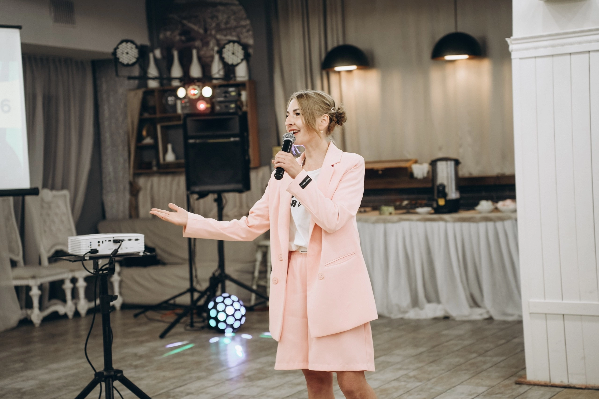
Праздник —
это люди,
а не сценарий.
Жизнь в кадре
Настоящие люди.
Настоящие эмоции.


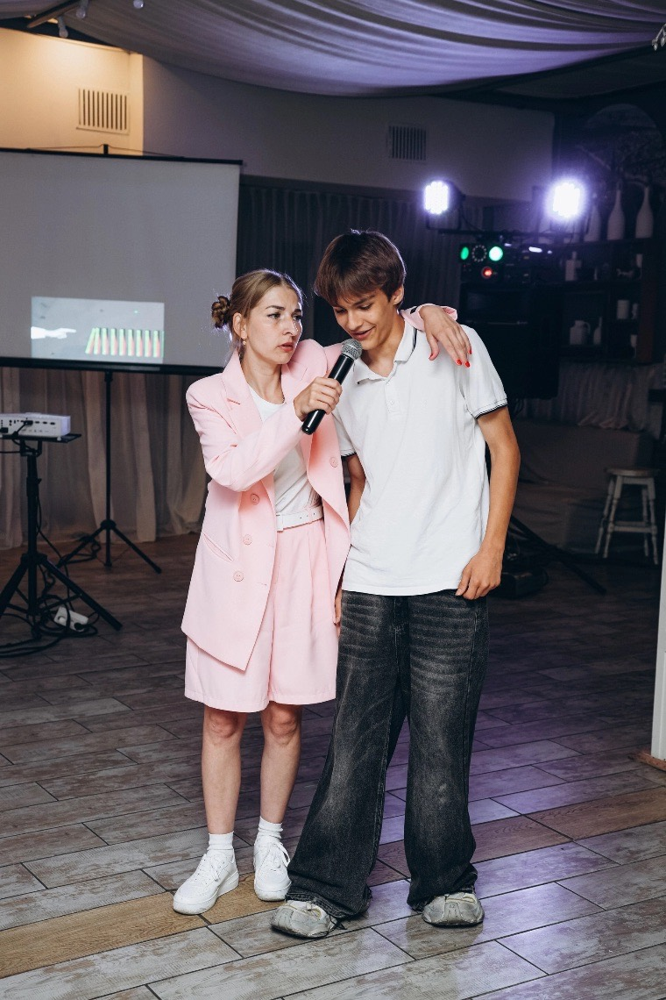


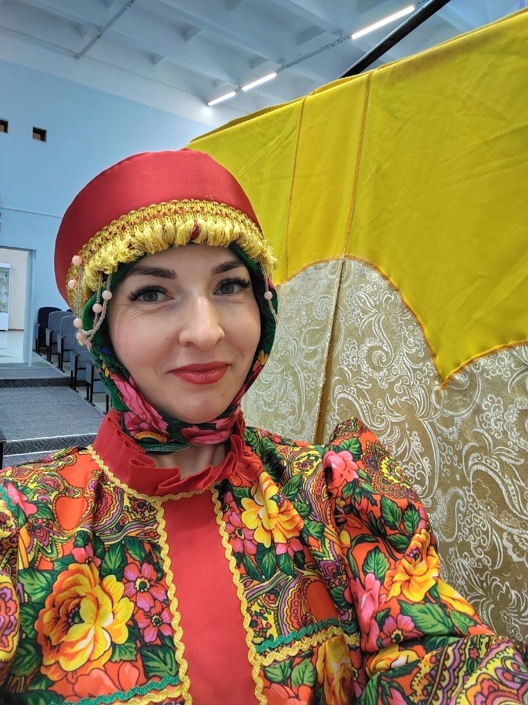

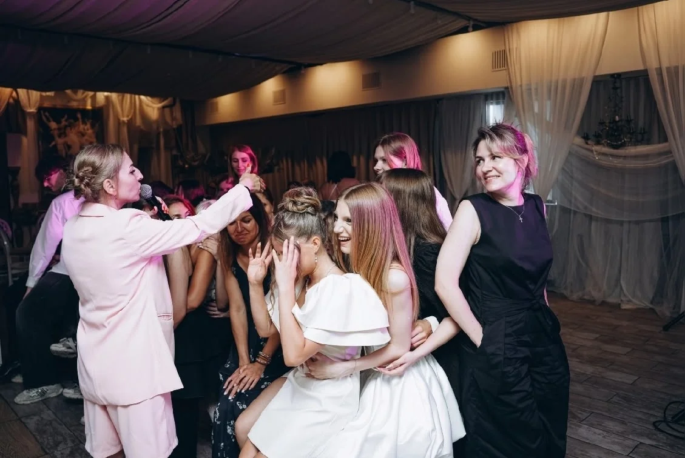

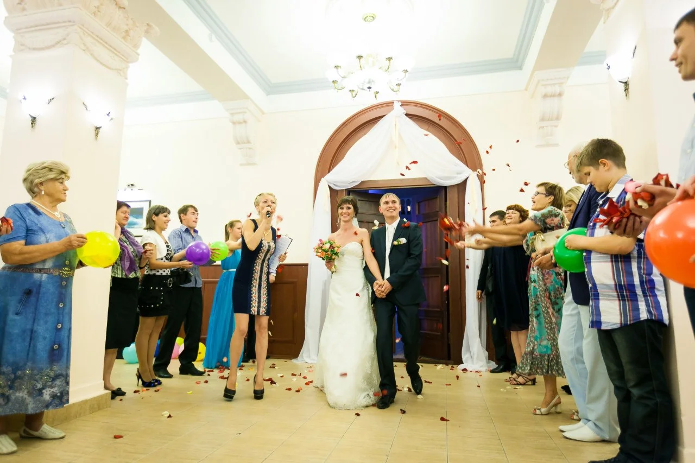

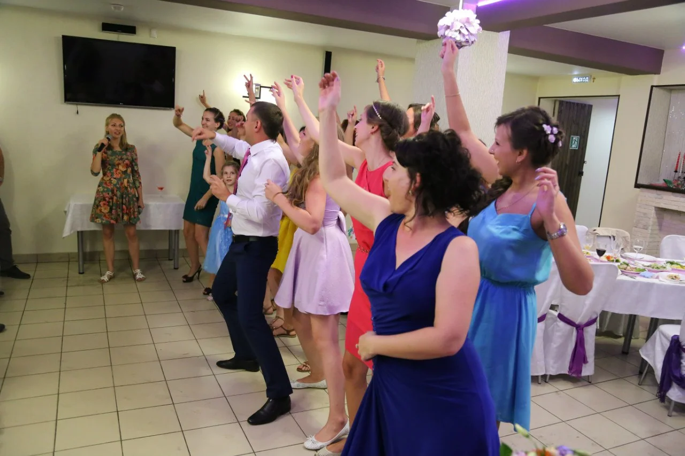

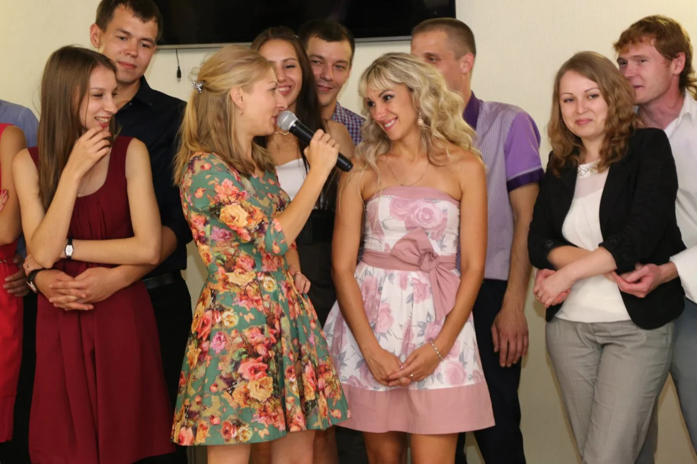

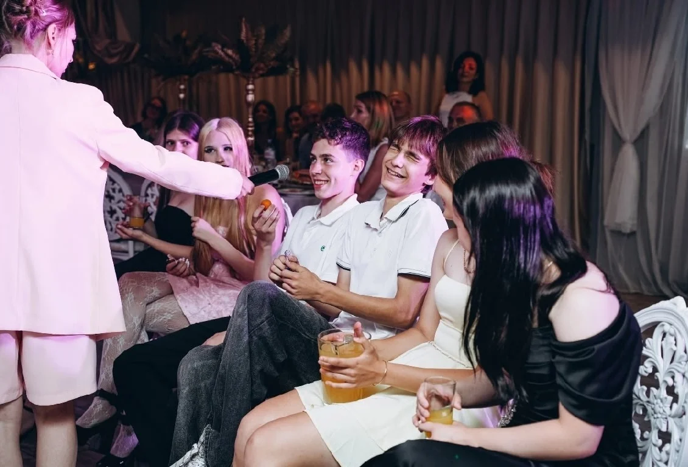

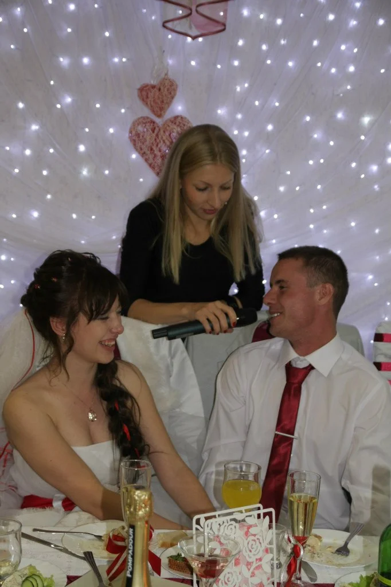

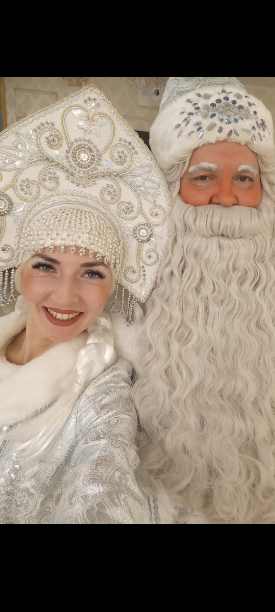

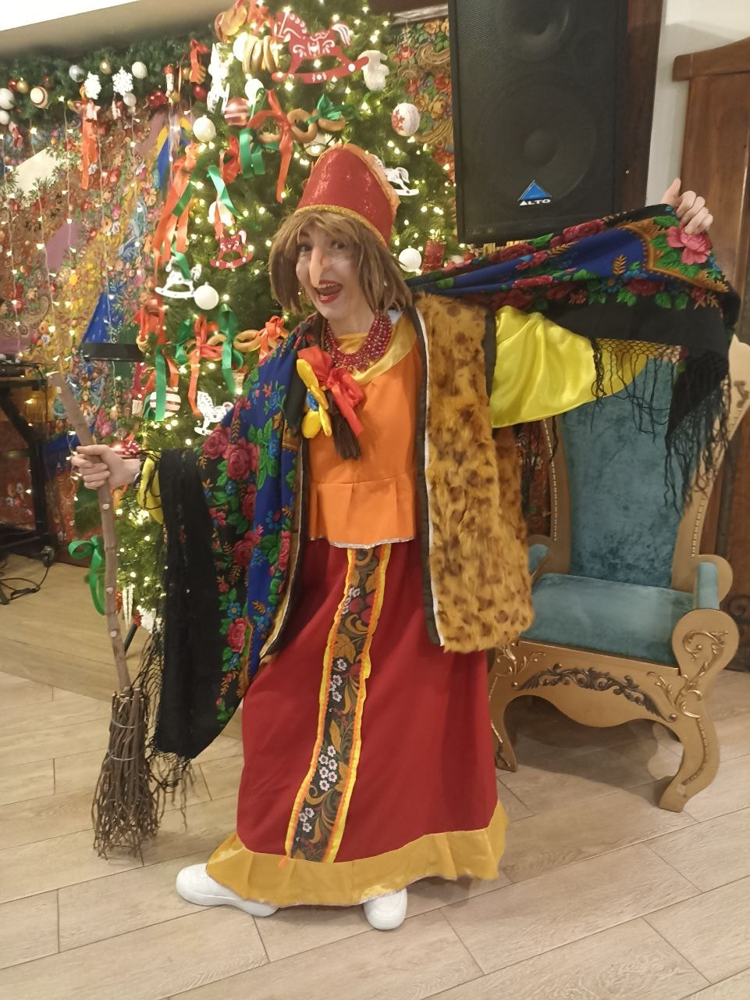

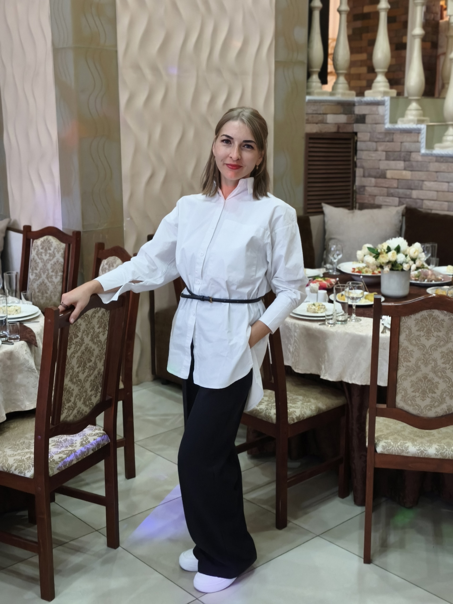
Маленькие мгновения большой истории
Тёплые слова
Самое ценное — слова тех,
кто доверил мне свой день.


Нажмите на карточку, чтобы прочитать полный отзыв
Каким будет
ваш праздник?
Расскажите о поводе, дате и ваших пожеланиях.
Вместе придумаем вечер, который хочется вспоминать.